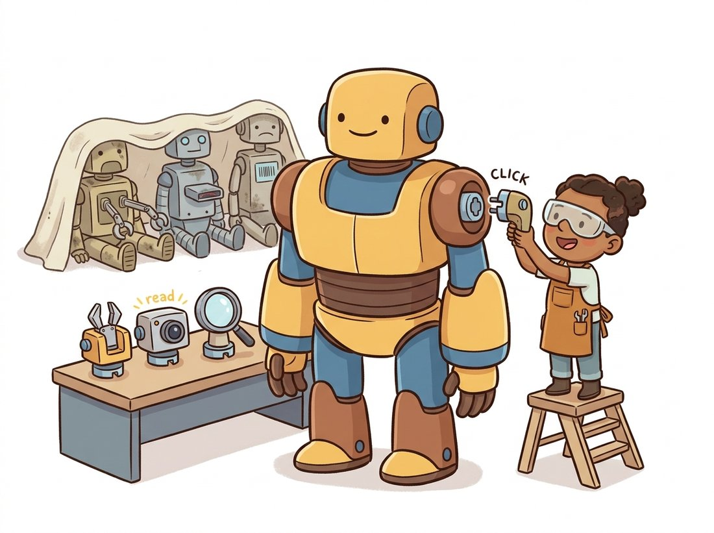

"Once there were a thousand small models, each expert in one narrow thing and helpless outside it. Now there are a few large ones that know almost everything a little, and the real skill is no longer training a model but choosing which giant to borrow and what to ask of it."
A Foundation Model Surveying Its Own Crowded Field
A vision foundation model is a single network, pretrained once at scale, whose features serve many downstream tasks with little or no task-specific training. The practitioner's job has shifted from training a model to choosing the right pretrained giant and adapting it cheaply. This closing section maps the 2024 to 2026 landscape: DINOv2 for general-purpose frozen features, the CLIP and SigLIP family for language-aligned embeddings, and SAM for promptable masks, plus the rule of thumb for picking among them. It then looks forward to the scaling laws that govern these models and the JEPA direction toward predicting in representation space, which carries the chapter's thread directly into video understanding and world models.
The previous five sections built the methods; this one organizes them into a usable map and looks ahead. We will lay out the major foundation models by what they are good for, give a concrete decision procedure for choosing a backbone, examine the scaling laws and data-curation lessons that explain why these models work, and close on the predictive-representation direction that links this chapter to the rest of the book. This is the synthesis section: less new mechanism, more judgment about how to deploy what you have learned, and where the field is heading next. It completes the foundation-model story that Chapter 22 and the transfer learning of Chapter 21 set up, and hands off to Chapter 26.
1. The Major Families, by What They Do Intermediate
The methods of this chapter crystallized into a handful of model families, each defined by its pretraining objective and therefore by what its features are good at. Understanding the map means understanding which objective produced which strength. DINOv2 (self-distillation plus masked modeling, no language) gives general-purpose features that excel frozen, across classification, dense correspondence, depth, and segmentation. Its successor DINOv3 (Meta AI, 2025) scales the same recipe to a 7-billion-parameter ViT trained on 1.7 billion curated images. It adds a regularizer the authors call Gram anchoring, which keeps dense features sharp over long training, and reports state-of-the-art dense prediction with frozen weights. The CLIP and SigLIP family (language-supervised, from Section 25.4) gives language-aligned embeddings for anything involving text: zero-shot recognition, retrieval, and conditioning generators. The SAM line (promptable, from Section 25.5) gives masks on demand, and its latest member SAM 3 (Carion et al., 2025) adds promptable concept segmentation, returning masks for every instance matching a noun phrase in one model rather than one prompted object at a time. Table 25.6.1 lays out the comparison.
| Family | Pretraining signal | Strongest at | Reach for it when |
|---|---|---|---|
| DINOv2 / DINOv3 | Self-distillation + masked modeling, image only | Frozen dense features, correspondence, depth | You freeze the backbone and use features directly |
| CLIP / SigLIP | Image-text contrastive, web scale | Zero-shot recognition, retrieval, text conditioning | The task involves language or open vocabulary |
| MAE-pretrained ViT | Masked pixel reconstruction | Strong fine-tuning initialization | You will fine-tune end to end on labeled data |
| SAM / SAM 2 | Promptable masks, 1.1B-mask data engine | Pixel-accurate masks from a prompt; video tracking | You need masks for arbitrary objects, interactively |
These families are increasingly combined rather than chosen exclusively. DINOv2 features feed monocular depth systems in Chapter 27; SigLIP encoders sit inside open-vocabulary detectors from Section 25.5 and inside multimodal language models; SAM consumes the boxes of a CLIP-based detector. The map is less a menu of alternatives than a toolbox of interoperable parts, which is the defining shift the chapter has been describing.
You can predict what a foundation model's features will be good at from the objective it was trained on, without running a benchmark. A model trained to align images with text (CLIP) will be strong wherever language is involved and may be weaker at fine spatial detail. A model trained to reconstruct masked pixels (MAE) will be a strong fine-tuning start but a mediocre frozen feature extractor. A model trained by self-distillation (DINO) will cluster images semantically and give excellent frozen features. When you face an unfamiliar foundation model, read its pretraining objective first; it tells you where the model will shine and where it will not.
2. Choosing and Adapting a Backbone Beginner
For a real project, the choice follows from two questions answered in order. First, does your task involve language or an open vocabulary? If yes, start in the CLIP and SigLIP family, because only language-aligned models can match arbitrary text. Second, if the task is purely visual, will you freeze the backbone or fine-tune it? If you will freeze it (retrieval, clustering, few-shot, dense correspondence), choose DINOv2; if you will fine-tune on labeled data, an MAE-pretrained ViT is an excellent initialization. For masks of arbitrary objects, layer SAM on top of whichever recognition model names them. Figure 25.6.1 turns this into a decision tree.
Adapting the chosen backbone is cheap by design. The linear probe and fine-tuning protocols of Section 25.1 and Chapter 21 still apply, and parameter-efficient methods (a small adapter, or LoRA, the same low-rank adaptation you will meet for generators in Chapter 34) let you specialize a giant backbone by training a tiny fraction of its weights. The code below shows the most common adaptation: load a frozen DINOv2 backbone and attach a small trainable head.
import torch
import torch.nn as nn
# Load a frozen DINOv2 backbone; this is the practical default for frozen features.
backbone = torch.hub.load("facebookresearch/dinov2", "dinov2_vitb14")
for p in backbone.parameters():
p.requires_grad_(False) # freeze: adapt with a tiny head only
backbone.eval()
class FoundationClassifier(nn.Module):
def __init__(self, backbone, feat_dim=768, num_classes=10):
super().__init__()
self.backbone = backbone # frozen feature extractor
self.head = nn.Linear(feat_dim, num_classes) # the only trainable parameters
def forward(self, x):
with torch.no_grad():
feats = self.backbone(x) # frozen forward, no gradients stored
return self.head(feats) # train just this linear layer
model = FoundationClassifier(backbone)
trainable = sum(p.numel() for p in model.parameters() if p.requires_grad)
total = sum(p.numel() for p in model.parameters())
print(f"trainable: {trainable:,} of {total:,} params ({100*trainable/total:.3f}%)")
# trainable: 7,690 of 86,588,170 params (0.009%)The printed line is the whole point of the chapter in one number: a task is solved by training under one ten-thousandth of the model's parameters, because the foundation model already learned to see. The practical example shows a team living by this workflow, and the Hands-On Lab at the end of this section has you build that workflow yourself, comparing a frozen DINOv2 backbone against CLIP zero-shot classification on the same images.
Who: the computer-vision group at a logistics company, 2024, responsible for a dozen perception tasks across sorting, damage detection, and label reading. Situation: historically they trained a bespoke CNN per task, each needing its own labeled dataset and weeks of tuning, and each aging quickly. Problem: maintaining a dozen separately-trained models was expensive, and new tasks took too long to stand up. Decision: they standardized on two frozen foundation backbones, a DINOv2 for visual tasks and a SigLIP for anything involving text or open vocabulary, and built every new task as a small trainable head or a LoRA adapter on top, exactly the pattern in the code above. They added SAM behind a Grounding DINO front end for any masking need. Result: new tasks went from weeks to days because the heavy representation was already done; the frozen backbones could be evaluated, cached, and shared across tasks, cutting both training cost and the inference cost of running one shared encoder; and robustness improved because the foundation features generalized to lighting and packaging the old per-task models had never seen. Lesson: for most applied teams in 2024 to 2026, the right unit of work is no longer a model but an adapter on a foundation backbone. Choosing the backbone by objective (Table 25.6.1) and adapting it cheaply is the modern computer-vision workflow, and it is what this chapter has been preparing you to do.
The illustration below sums up this shift: one shared giant backbone with small swappable adapter heads, retiring the old one-model-per-task era.

3. Scaling, Curation, and the Predictive Frontier Advanced
Why do these models work, and where are they going? Two empirical lessons explain the present. First, scaling laws: foundation-model quality improves predictably as a power law in model size, data size, and compute, so much of the progress from CLIP to DINOv2 to SigLIP came from scaling a known recipe rather than inventing a new one. Second, and the harder-won lesson, data curation matters as much as scale: DINOv2's leap over plain self-supervision came substantially from automatically curating a large, diverse, deduplicated image set, and the CLIP-data line (DataComp, DFN) showed that filtering web pairs well beats simply collecting more. Quality of data, not just quantity, sets the ceiling.
The frontier direction unifies the chapter's threads. Pixel reconstruction (MAE) wastes capacity on imperceptible detail; pure language alignment (CLIP) can miss fine spatial structure. The Joint-Embedding Predictive Architecture (JEPA) line argues for predicting in representation space: mask part of the input and predict the features of the missing part, not its pixels or its caption. I-JEPA did this for images, and the V-JEPA line extended it to video, learning to predict masked spatiotemporal regions in feature space and thereby learning motion and dynamics without action labels. V-JEPA 2 (Meta AI, 2025) scaled this to a 1.2-billion-parameter video model pretrained on over a million hours of video, and an action-conditioned variant plans robot manipulation from learned dynamics, an explicit step from representation learning toward a world model. This is the same self-supervision-to-prediction arc the cross-reference map traces: the masked-prediction idea of Section 25.3, pushed from reconstructing content to predicting representations, becomes a way to learn the structure of how scenes evolve. That is the doorway to the predictive video models and world models of Chapter 26 and beyond.
Three open questions define 2024 to 2026. First, will the field consolidate into one general vision model or remain a toolbox of specialized primitives (DINOv2, SigLIP, SAM) composed in pipelines as in Section 25.5? The evidence in 2025 points both ways: SAM 3 (Carion et al., 2025) folds the open-vocabulary detect-then-segment pipeline into one model, yet multimodal language models increasingly invoke separate detectors and segmenters as tools, suggesting specialist vision foundations orchestrated by a generalist controller. Second, does predicting in representation space (I-JEPA, V-JEPA, and V-JEPA 2, 2023 to 2025) decisively beat pixel reconstruction and language alignment, or do the three fuse? DINOv2 already fuses distillation and masked modeling, and DINOv3 (2025) shows the recipe still scales; a model fusing all three is the natural next experiment. Third, how far do scaling laws carry before data, not compute, becomes the binding constraint, the question the data-curation lesson raises. What is settled is the shift this chapter documented: vision models now learn from raw pixels and from the language humans already wrote, labels stopped being the bottleneck, and the practitioner's craft moved from training models to choosing and steering foundations.
The phrase "foundation model" was coined in a 2021 Stanford report, not in a vision paper, and it was controversial precisely because it named a bet: that a few large pretrained models would become the shared foundation everything else is built on, with all the concentration of capability and risk that implies. In vision the bet has largely paid off in the span of this chapter's timeline. The same report's warnings about brittleness, bias inherited from web data (recall CLIP's typographic attack), and the difficulty of auditing a model used for a thousand downstream purposes are now the active governance questions of Chapter 37.
For each of four hypothetical tasks, name which foundation family from Table 25.6.1 you would start with and justify it from the model's pretraining objective alone: (a) clustering ten million unlabeled product photos by visual similarity; (b) finding all images matching the phrase "a child flying a kite" in a database; (c) fine-tuning a high-accuracy classifier for fifty industrial defect types with ten thousand labeled images; (d) interactively masking arbitrary objects a user clicks on. Then identify one task where two families are plausible and explain the trade-off.
Using the frozen-backbone code in subsection 2, build classifiers for a small labeled dataset on top of two different frozen backbones (a DINOv2 and a CLIP image encoder), training only a linear head on each. Report test accuracy and the number of trainable parameters for each. Then unfreeze and fine-tune one of them end to end and compare accuracy and training time. Write one paragraph on when the extra accuracy of fine-tuning is worth the much larger training cost, connecting your answer to the logistics practical example.
The section contrasts three self-supervised prediction targets: pixels (MAE), language (CLIP), and representations (JEPA). For each, state what the model is penalized for getting wrong, and argue what kind of information that penalty encourages the model to keep versus discard. Then explain the specific complaint JEPA raises against pixel reconstruction, why predicting in representation space is claimed to address it, and how this connects to learning motion and dynamics for the video models of Chapter 26.
Hands-On Lab: Build a Label-Free Vision Toolkit From Two Foundation Models
Objective
Stand up a small image toolkit that needs no task labels, built entirely on two pretrained foundation models from this chapter. You will use a frozen DINOv2 backbone to embed a folder of your own photos and find visually similar images by nearest neighbor, then use CLIP to classify those same photos zero-shot from a list of category names you type at runtime. The finished artifact is a single script that, given a folder of images and a list of candidate labels, returns for each image its zero-shot label, its confidence, and its three nearest visual neighbors, the practical embodiment of the foundation-model workflow this chapter has been building toward.
What You'll Practice
- Loading a frozen self-supervised backbone (DINOv2) through
torch.hub, the frozen-feature default of subsection 2 - Extracting and L2-normalizing embeddings, then ranking by cosine similarity, the dot-product similarity measure used since Section 25.2
- Running CLIP zero-shot classification with prompt templates, the open-vocabulary recipe of Section 25.4
- Contrasting a pixel-and-distillation backbone (DINOv2) with a language-aligned one (CLIP) on the same images, the choose-by-objective skill of Table 25.6.1
- Building a reusable adapter-on-a-backbone pipeline instead of training a model from scratch
Setup
A machine with Python 3.9 or newer (a free Colab GPU runtime is ideal but a modern CPU runs the base models on a few dozen images). Install PyTorch, the Hugging Face stack for CLIP, and the small extras DINOv2 needs:
pip install torch torchvision transformers pillow numpyFor data, drop twenty to fifty of your own photos into a folder named images/. A mix of a few recognizable categories works best (for example pets, vehicles, and food), so that both the nearest-neighbor grouping and the zero-shot labels have something to separate. No annotations of any kind are required: that is the entire point.
Steps
Step 1: Load and preprocess your image folder
Read every image in the folder and build the two transforms the two models expect. DINOv2 wants ImageNet-normalized tensors at a multiple of its patch size; CLIP brings its own processor. Getting the preprocessing right is most of the battle.
from pathlib import Path
from PIL import Image
import torch
from torchvision import transforms
paths = sorted(Path("images").glob("*.jpg")) + sorted(Path("images").glob("*.png"))
pil_images = [Image.open(p).convert("RGB") for p in paths]
print(f"loaded {len(pil_images)} images")
# DINOv2 expects a square crop sized to a multiple of the patch (14) and
# the standard ImageNet mean/std normalization.
# TODO: build a torchvision transform that Resize((224, 224)), ToTensor(),
# and Normalize(mean=[0.485,0.456,0.406], std=[0.229,0.224,0.225]).
dino_tf = ...
Hint
Compose the three steps with transforms.Compose([...]). 224 is a multiple of 14, so it fits the ViT-B/14 patch grid without padding. CLIP needs no manual transform here; its processor handles resizing and normalization in Step 3.
Step 2: Embed every image with a frozen DINOv2 backbone
Load DINOv2, freeze it, and run a no-gradient forward pass to get one feature vector per image. L2-normalize the vectors so that a dot product becomes cosine similarity, exactly the trick the contrastive methods of Section 25.2 rely on.
backbone = torch.hub.load("facebookresearch/dinov2", "dinov2_vitb14")
backbone.eval()
for p in backbone.parameters():
p.requires_grad_(False) # frozen feature extractor, no training
batch = torch.stack([dino_tf(im) for im in pil_images])
with torch.no_grad():
feats = backbone(batch) # (N, 768) CLS-token features
# TODO: L2-normalize feats along dim=1 so each row has unit length,
# then compute the (N, N) cosine-similarity matrix as feats @ feats.T.
dino_emb = ...
sim = ...
Hint
Use torch.nn.functional.normalize(feats, dim=1). After normalization, dino_emb @ dino_emb.T is the cosine-similarity matrix; its diagonal is all ones (every image is identical to itself).
Step 3: Run CLIP zero-shot classification on the same images
Load a CLIP model and processor, wrap your candidate category names in a prompt template, and let CLIP score each image against each label in its shared embedding space. This is the open-vocabulary move of Section 25.4: no training, just text comparison.
from transformers import CLIPModel, CLIPProcessor
clip = CLIPModel.from_pretrained("openai/clip-vit-base-patch32")
proc = CLIPProcessor.from_pretrained("openai/clip-vit-base-patch32")
clip.eval()
labels = ["a dog", "a cat", "a car", "a plate of food", "a building"]
# TODO: build prompt strings with a template like "a photo of {label}",
# call proc(text=prompts, images=pil_images, return_tensors="pt", padding=True),
# run clip(**inputs), then softmax outputs.logits_per_image over dim=1.
probs = ...
Hint
The template matters: "a photo of a dog" usually beats the bare word "dog", the prompt-engineering effect of Exercise 25.4.2. outputs.logits_per_image has shape (num_images, num_labels); a row softmax turns it into per-image label probabilities.
Step 4: Report the toolkit's two outputs per image
For each image, print the CLIP zero-shot label with its confidence and the file names of its three nearest DINOv2 neighbors. This is the deliverable: one model gives you a name, the other gives you visual neighbors, neither needed a single label from you.
for i, path in enumerate(paths):
top = probs[i].argmax().item()
conf = probs[i][top].item()
# TODO: get the indices of the 3 most similar images to image i,
# excluding i itself, using sim[i] (set sim[i, i] to -1 first or skip it),
# then print path.name, labels[top], conf, and the neighbor file names.
...
Hint
Copy the row row = sim[i].clone(); row[i] = -1 so an image is not its own neighbor, then row.topk(3).indices gives the three nearest. Map those indices back through paths to get file names.
Step 5: Compare what the two backbones group by
Pick two images that CLIP labels the same but DINOv2 places far apart (or the reverse), and write down why. This step turns the toolkit into understanding: DINOv2 groups by visual appearance, CLIP groups by nameable concept, and the gap between them is the choose-by-objective lesson of this section.
# TODO: scan for a pair (i, j) where probs[i].argmax() == probs[j].argmax()
# (same CLIP label) but sim[i, j] is low (DINOv2 thinks they look different),
# print both file names and the values, and note the disagreement in a comment.
...
Hint
Two photos of very different-looking dogs share a CLIP label but can sit far apart in DINOv2 space, because DINOv2 was never told the word "dog". The reverse case, visually similar images CLIP labels differently, exposes where appearance and concept come apart.
Expected Output
Step 1 reports the number of images loaded. Step 2 produces an (N, 768) embedding matrix and an (N, N) similarity matrix whose diagonal is all ones. Step 4 prints one block per image, for example cat_03.jpg -> "a cat" (0.91); neighbors: cat_01.jpg, cat_07.jpg, cat_02.jpg, where the neighbors are visibly the same kind of subject. Step 5 surfaces at least one disagreement pair with a one-line explanation. The finished artifact is a single script that takes a folder and a label list and returns, per image, a zero-shot name and three visual neighbors, plus a short note on where the two backbones disagree and why.
Stretch Goals
- Swap CLIP for SigLIP (
google/siglip-base-patch16-224) and compare zero-shot confidences; SigLIP's sigmoid loss (Section 25.4) gives calibrated per-label scores rather than a forced softmax over your label set. - Add masking: run the Segment Anything automatic mask generator on one image and overlay the masks, connecting the toolkit to the promptable segmentation of Section 25.5.
- Library Shortcut: replace the hand-built DINOv2 nearest-neighbor search with a single
sklearn.neighbors.NearestNeighborsindex over the embeddings, and time how the query cost scales as you grow the folder, the retrieval pattern that feeds forward into Chapter 27.
Complete Solution
# Label-free vision toolkit: DINOv2 nearest neighbors + CLIP zero-shot labels.
from pathlib import Path
from PIL import Image
import torch
import torch.nn.functional as F
from torchvision import transforms
from transformers import CLIPModel, CLIPProcessor
# --- Step 1: load and preprocess ---
paths = sorted(Path("images").glob("*.jpg")) + sorted(Path("images").glob("*.png"))
pil_images = [Image.open(p).convert("RGB") for p in paths]
print(f"loaded {len(pil_images)} images")
dino_tf = transforms.Compose([
transforms.Resize((224, 224)), # 224 is a multiple of 14
transforms.ToTensor(),
transforms.Normalize(mean=[0.485, 0.456, 0.406],
std=[0.229, 0.224, 0.225]), # ImageNet normalization
])
# --- Step 2: DINOv2 embeddings and cosine-similarity matrix ---
backbone = torch.hub.load("facebookresearch/dinov2", "dinov2_vitb14")
backbone.eval()
for p in backbone.parameters():
p.requires_grad_(False)
batch = torch.stack([dino_tf(im) for im in pil_images])
with torch.no_grad():
feats = backbone(batch) # (N, 768)
dino_emb = F.normalize(feats, dim=1) # unit-length rows
sim = dino_emb @ dino_emb.T # cosine similarity (N, N)
# --- Step 3: CLIP zero-shot classification ---
clip = CLIPModel.from_pretrained("openai/clip-vit-base-patch32")
proc = CLIPProcessor.from_pretrained("openai/clip-vit-base-patch32")
clip.eval()
labels = ["a dog", "a cat", "a car", "a plate of food", "a building"]
prompts = [f"a photo of {lbl}" for lbl in labels] # prompt template helps
inputs = proc(text=prompts, images=pil_images, return_tensors="pt", padding=True)
with torch.no_grad():
out = clip(**inputs)
probs = out.logits_per_image.softmax(dim=1) # (N, num_labels)
# --- Step 4: per-image report ---
for i, path in enumerate(paths):
top = probs[i].argmax().item()
conf = probs[i][top].item()
row = sim[i].clone()
row[i] = -1 # exclude self
nbrs = [paths[j].name for j in row.topk(3).indices.tolist()]
print(f'{path.name} -> "{labels[top]}" ({conf:.2f}); neighbors: {", ".join(nbrs)}')
# --- Step 5: find a disagreement (same CLIP label, low DINOv2 similarity) ---
clip_label = probs.argmax(dim=1)
N = len(paths)
for i in range(N):
for j in range(i + 1, N):
if clip_label[i] == clip_label[j] and sim[i, j] < 0.4:
print(f"DISAGREE: {paths[i].name} & {paths[j].name} both "
f'"{labels[clip_label[i]]}" but DINOv2 sim={sim[i, j]:.2f}')
break
else:
continue
break
# DINOv2 groups by appearance; CLIP groups by nameable concept. The gap between
# them is exactly the choose-by-objective lesson of Table 25.6.1.